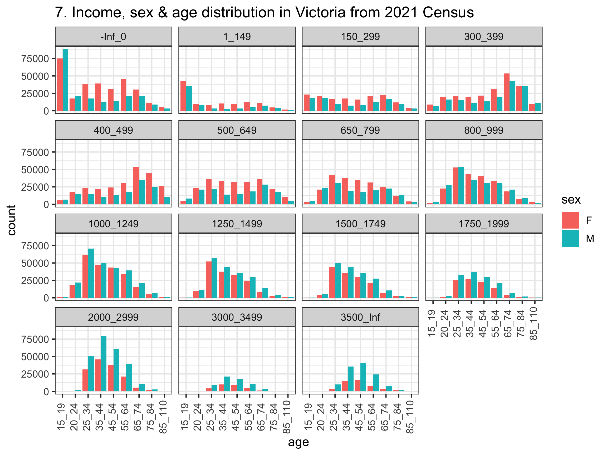

install.packages("here")Week 4 Tutorial
Learning Objectives
In this tutorial, you will be using the Australia Census data and be learning about:
- Structuring your projects
- Wrangling messy data into tidy data
- Practicing your string manipulation
Note: You should have completed all the startR modules. We will assume you are up to date with the content in these moving forward.
Before your tutorial
For today’s class:
- Set up your project folder
For the last few weeks, you’ve been using a R script file or we’ve shared a folder with a project. It’s time for you to start setting up your own projects!
Below is an example of how to get started.
RStudio > New Project > New Directory > New Project
Save it in a directory of your choosing.
You can call the project what you like, but we recommend
tutorial-04.Create folders called
dataandanalysis(or similarly named) in the project root directory.Create an
exercise-04.qmdunder theanalysis(or similarly named) folder.
- Getting the census data
Go to https://www.abs.gov.au/census/find-census-data/datapacks selecting the following options:
2021 Census Datapacks - General Community Profile - All geographies - Vic
The downloaded file would be called 2021_GCP_ALL_for_Vic_short-header.zip.
- Unzip this file and save the folder in the
datafolder you set up.
- Installing the
hereR-package
We use this for referencing files relative to your current working directory.
- Check your project structure
Your project structure should look like below.
tutorial-04
├── analysis
│ └── exercise-04.Rmd
├── data
│ └── 2021_GCP_ALL_for_Vic_short-header
│ └── 2021\ Census\ GCP\ All\ Geographies\ for\ VIC
│ ├── SA1
│ │ └── VIC
│ │ ├── 2021Census_G17A_VIC_SA1.csv
│ │ ├── 2021Census_G17B_VIC_SA1.csv
│ │ └── 2021Census_G17C_VIC_SA1.csv
│ └── STE
│ └── VIC
│ ├── 2021Census_G17A_VIC_STE.csv
│ ├── 2021Census_G17B_VIC_STE.csv
│ └── 2021Census_G17C_VIC_STE.csv
└── tutorial-04.Rproj- Note that it’s not desirable to have spaces in your file or folder name so we use underscores.
- Put your analysis from the exercises into the
analysis/exercise-04.qmd.
Exercise 1
Practice regular expression
Consider the following vector A and B.
A <- c("F_300_399_55_64_yrs",
"F_1_149_35_44_yrs",
"F_150_299_25_34_yrs",
"M_800_999_75_84_yrs",
"M_400_499_65_74_yrs")
B <- c(A,
"F_1_149_15_19_yrs",
"F_150_299_85ov",
"M_1500_1749_85ov",
"M_Neg_Nil_income_20_24_yrs",
"M_150_299_25_34_yrs")The first letter has information on the sex, followed by minimum income, maximum income, minimum age, and maximum age separated by _, with some exceptions for certain age and income categories (e.g. Neg_Nil is negative or nil income, 85ov is 85 years or over).
We want to wrangle this vector to extract the variables and later make them their own columns in a data frame. Try using the functions str_split(), str_replace() and or str_remove() to do this.
Hint
# some examples to help you
library(tidyverse)
str_split("A_B_C_D", "_")[[1]]
[1] "A" "B" "C" "D"str_replace("Neg_nil_income", "Neg", "-Inf")[1] "-Inf_nil_income"str_replace("Neg_nil_income", "nil", "0")[1] "Neg_0_income"str_replace("we_want_fourthings", "rt", "r_t")[1] "we_want_four_things"str_remove("we_want_to_remove_the_extra_stuff", "to_remove_the_extra_")[1] "we_want_stuff"Exercise 2
Tidy your census data
Start with loading the tidyverse package and setting the path ways to the data.
library(tidyverse)
census_path <- here::here("data/2021_GCP_all_for_VIC_short-header/2021 Census GCP All Geographies for VIC")
SA1_paths <- glue::glue(census_path, "/{geo}/VIC/2021Census_G17{alpha}_VIC_{geo}.csv",
geo = "SA1", alpha = c("A", "B", "C"))
STE_paths <- glue::glue(census_path, "/{geo}/VIC/2021Census_G17{alpha}_VIC_{geo}.csv",
geo = "STE", alpha = c("A", "B", "C"))To load the data we will use the here function from the here package. The path argument parsed to here::here will be referenced with respect to the .Rproj file. This is particularly helpful if your project structure becomes deeply nested.
tutorial-04
├── analysis
│ └── exercise-04.Rmd # << analysis are here
├── data # << data are here
│
│
└── tutorial-04.Rproj # << make reference point `here`First focus on 2021Census_G17A_VIC_STE.csv, and develop an understanding of what R reads in using the function str. This will help you develop an idea of the data structure.
STE_G17A <- read_csv(STE_paths[1])
str(STE_G17A) - How many rows and columns does
STE_G17Acontain?
Part of our mission today is to make this data into a tidy form. The first step to this is pivoting the data from it’s wide format into a long format. Check out the tidyverse cheat sheet for some extra help understanding how the data is being combined.
STE_G17A_long <- STE_G17A |>
pivot_longer(cols = -1, names_to = "category",
values_to = "count")Use View() to compare STE_G17A before and STE_G17A_long after.
- What about the other STE_paths? Is the data structured similarly?
The answer is yes, so let’s read in all the data and combine it together.
data_paths <- STE_paths
# Read in each of the three tables
tbl_G17A_long <- read_csv(data_paths[1]) |>
pivot_longer(cols = -1, names_to = "category",
values_to = "count")
tbl_G17B_long <- read_csv(data_paths[2]) |>
pivot_longer(cols = -1, names_to = "category",
values_to = "count")
tbl_G17C_long <- read_csv(data_paths[3]) |>
pivot_longer(cols = -1, names_to = "category",
values_to = "count")
# Combine all the data together
tbl_G17_long <- bind_rows(tbl_G17A_long, tbl_G17B_long, tbl_G17C_long)We can sanity check our operations by looking at the changes in the dimension of the data.
nrow(tbl_G17A_long) + nrow(tbl_G17B_long) + nrow(tbl_G17C_long)[1] 510nrow(tbl_G17_long) [1] 510The next step is to separate the category column out into multiple different variables for sex, age_min, age_max income_min, and income_max. There is a handy function that can help us do that called separate_wider_delim(), which is similar to str_split() but works for splitting columns in data frames.
The catch with using separate_wider_delim() is that we want all entries in the column to be of a similar format. However, there are lot of weird cases that we would need to change to make look more standard.
- Neg_Nil_income \rightarrow change to -Inf_0.
1*) Negtve_Nil_income \rightarrow change to -Inf_0. - more \rightarrow Inf.
- PI_NS \rightarrow don’t want these columns for today (like NA_NA).
- 85ov \rightarrow change to 85_110. 4*) 85_yrs_ov \rightarrow change to 85_110.
- Tot \rightarrow don’t want these columns (can reproduce them from the data).
One way to find these edge cases is by looking through the meta data. Another is to count the number of underscores of each entry in the column category.
underscore_count_per_category = str_count(string = tbl_G17_long$category, pattern = "_")
table(underscore_count_per_category)underscore_count_per_category
2 3 4 5 6
6 84 30 339 51 - Remove any columns with the header that contains the strings
Tot(totals) orPI_NS(personal income not stated).
tbl_G17_long_formatted <- tbl_G17_long |>
filter(!str_detect(string = category, pattern = "Tot"),
!str_detect(category, "PI_NS"))- Wrangle your data so that it has the columns:
count,sex,age_min,age_maxincome_min, andincome_max. For those with no upper bound (e.g. 85 over, 3000 or more), you can useInfin R to signify \infty. A quick google tells us no one in Australia is older than 110, so that seems like a more reasonable upper bound for age.
tbl_G17_long_formatted <- tbl_G17_long_formatted |>
mutate(
category = str_replace(category, "Neg_Nil_income", "-Inf_0"),
category = str_replace(category, "Neg_Nil_incme", "-Inf_0"),
category = str_replace(category, "Negtve_Nil_incme", "-Inf_0"),
category = str_replace(category, "more", "Inf"),
category = str_replace(category, "85ov", "85_110_yrs"),
category = str_replace(category, "85_yrs_ovr", "85_110_yrs"))We can do a quick check to see if our changes make the entries in columns category have the same number of “_” separators.
underscore_count_per_category = str_count(tbl_G17_long_formatted$category, "_")
table(underscore_count_per_category)underscore_count_per_category
5
405 Looks good, so let’s separate out those different entries into columns. Remember to check your result using View().
tbl_G17_tidy <- tbl_G17_long_formatted |>
mutate(category = str_remove(category, "_yrs")) |>
separate_wider_delim(cols = category, delim = "_",
names = c("sex", "income_min", "income_max", "age_min", "age_max"))
# View(tbl_G17_tidy)- What is the importance of the
mutatecall usingstr_remove()?
Later on we are going to do some graphing using different categorical ranges. So let’s also create two new variables for age bracket and income bracket.
tbl_G17_tidy = tbl_G17_tidy |>
unite("income", c(income_min, income_max), remove = FALSE) |>
unite("age", c(age_min, age_max), remove = FALSE)
# View(tbl_G17_tidy)- Repeat the above for the SA1 data. This should be as easy as changing
data_pathsfromSTE_pathstoSA1_paths.
Take time to note here just how many different steps we needed to do to wrangle our data into a useful format for our filtering and plotting needs. Figuring out all these steps yourself would take a lot of time! To get quicker at understanding what is in your data and how to format it for an analysis will come with time and practice.
In your own time: Exercise 3
Quality check your census data
According to the data from Exercise 2, how many people are there in Victoria? If you check http://www.population.net.au, there are 6.62 million people in 2021 at Victoria. Does it look right? Are we missing some people in the data? If so, what kinds of people are we missing?
What is the minimum and maximum of values for
count? Do the range and categories for each column look right?Draw a barplot (using
ggplotor otherwise) of the number people in Victoria by:- sex
- age group
- income group
- sex and age group
- sex and income group
- age and income group
- sex, age and income group
Note to make your labels appear in the correct order on your axes you will need to run the following code.
tbl_G17_tidy$income <- fct_reorder(tbl_G17_tidy$income,
as.numeric(tbl_G17_tidy$income_min))Hint: click here for a code for the 7th barplot
tbl_G17_tidy %>%
filter(sex != "P") |>
ggplot(aes(x = age, y = count, fill = sex)) +
geom_col(position = "dodge") +
facet_wrap(~income) +
theme_bw(base_size = 12) +
theme(axis.text.x = element_text(angle = 90, vjust = 0.3)) +
ggtitle("7. Income, sex & age distribution in Victoria from 2021 Census")
- Do the graphs meet your expectations of the data? Discuss with your classmates.
- Is it easier to answer these questions because we made our data tidy?
In your own time: Exercise 4
Extract statistics from your tidy census data
According to the 2021 Census data:
How many women in Victoria are aged between 15-54 years old?
What is the proportion of people in Victoria that are 25-34 years old (inclusive) and earn $1750 or more per week?
Suppose I randomly select a man from all the men aged 25-44 years old in Victoria. What is the probability that the man I selected earns less than $1500 per week?